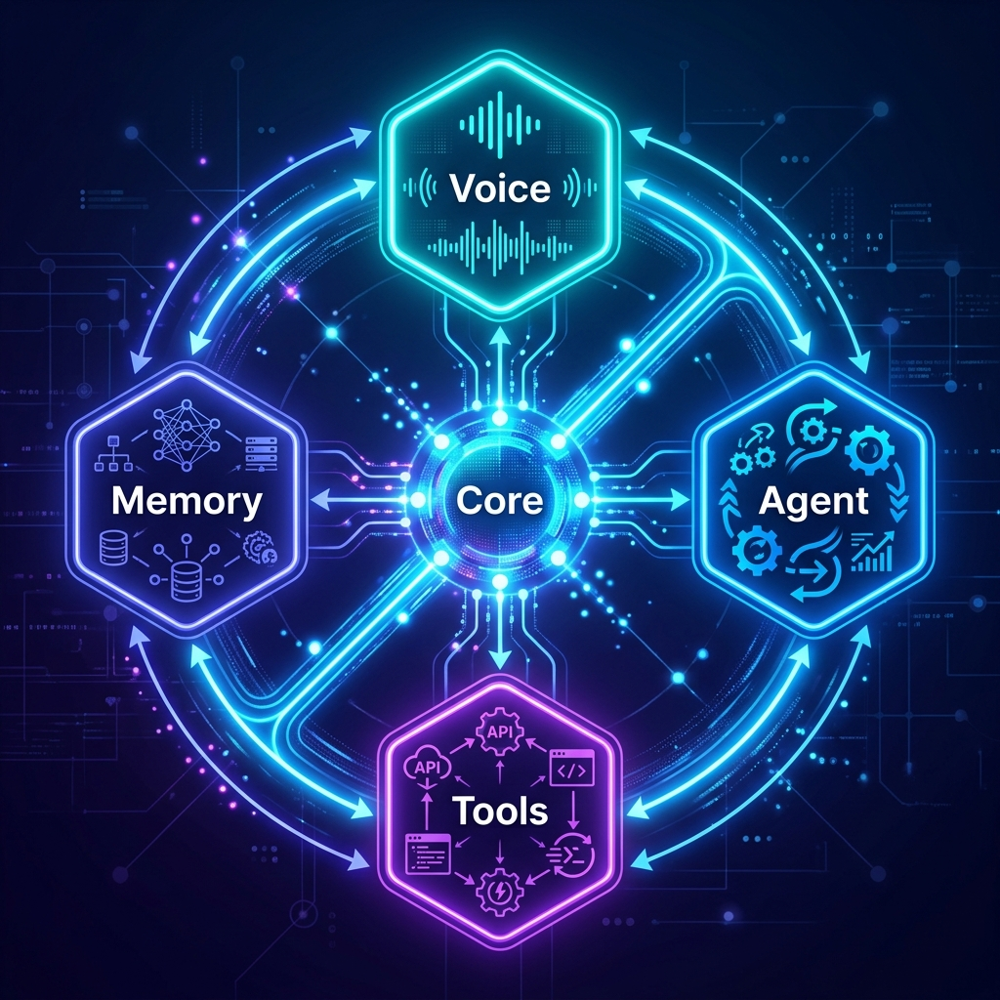

Modern AI assistants like Siri and Alexa remain limited — they cannot see your screen, control your applications, or remember context across sessions. LEO (Linguistic Executive Officer) is an autonomous AI system that bridges this gap by combining real-time voice interaction, visual screen awareness, computer automation, and persistent memory into a single unified agent.
Unlike cloud-locked assistants, LEO operates locally with zero subscriptions, offering full OS-level control through natural conversation on Windows, macOS, and Linux.
- Build a fully autonomous AI assistant capable of controlling any operating system via voice
- Implement real-time visual awareness through screen capture and webcam analysis
- Develop an agentic task planner for multi-step goal execution without human intervention
- Create a persistent memory system that remembers user context across sessions
- Enable cross-platform browser automation using Playwright for web-based tasks
- Ensure privacy-first design with local execution and physical mute controls

LEO employs a modular pipeline architecture with five key layers working in real-time:
Capture
Live API
Router
Executor
Response
- Voice Engine: Google Gemini 2.5 Flash Native Audio model with bidirectional PCM streaming at 16kHz input / 24kHz output
- Tool System: 16 specialized function declarations with automatic routing — browser, files, apps, code, desktop, weather, YouTube, flights, games
- Agentic Planner: Multi-step task decomposition with priority queue, error recovery, and autonomous re-planning
- Browser Automation: Playwright-based cross-browser control (Chrome, Edge, Firefox, Opera, Brave, Safari)
- Vision Module: Real-time screen capture + webcam analysis via Gemini multimodal API
- Memory System: JSON-based persistent storage with 6 categories — identity, preferences, projects, relationships, wishes, notes
- UI Layer: Custom Tkinter interface with animated state indicators (Listening, Thinking, Speaking)
- Successfully implemented real-time bidirectional voice with <500ms latency using Gemini Live API
- All 16 tool modules operate reliably — app launching, file management, browser control, code generation, and more
- Agentic task planner handles complex multi-step workflows with automatic error recovery
- Persistent memory system retains user context across sessions with categorized storage
- Browser automation achieves cross-browser compatibility across 7 major browsers
- Screen analysis provides accurate visual understanding for context-aware responses
LEO demonstrates that a locally-executed, voice-driven AI agent can achieve capabilities previously limited to cloud-only enterprise solutions. The modular architecture allows each subsystem to evolve independently.
"LEO transforms your operating system into an intelligent entity — it doesn't just respond to commands, it understands context, remembers preferences, sees your screen, and autonomously executes complex multi-step workflows."
Key advantages over existing assistants:
- Full OS Control: Unlike Siri/Alexa, LEO can control any application and automate desktop workflows
- Visual Intelligence: Real-time screen reading enables context-aware assistance
- Zero Cloud Lock-in: Runs locally with API keys — no subscriptions or data sharing
- True Autonomy: Agentic planner decomposes goals into executable steps
Conclusion: LEO successfully provides a fully autonomous, cross-platform AI assistant with real-time voice interaction, visual awareness, 16 specialized tools, agentic planning, and persistent memory — all running locally with privacy-first design.
Future Enhancements:
- Mobile companion app (Android/iOS) for remote control
- RAG-based document analysis and knowledge retrieval
- Multi-agent collaboration for complex workflows
- Smart home IoT integration (lights, thermostat, cameras)
- On-device model support for fully offline operation
We thank the Management, Principal, Dean, HOD, and the ISE department of SJB Institute of Technology for their continuous support and guidance throughout this project.
Contact: Varun Nayaka | SJBIT, Dept of ISE